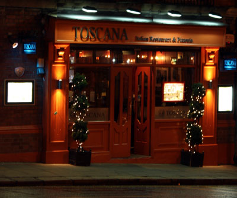

From O'Connell Street to Toscana City Centre
Entering O'Connell Street from Parnel Street, the Gresham hotel will be on your left. Continue and pass straight through O'Connell bridge. Continue straight through to D'Olier Street, follow the road and it will vear to the right at the side walls of Trinity College. Stay to the left, and after the lights follow onto Dame Street. Continue straight with the main gates of Trinity College behind you, continue up Dame Street, you will pass some pedestrian lights and see Central bank with the golden ball to your right hand side. Continue straight through the main set of traffic lights adjacent Georges street. Continue Straight, our restaurant is near the Olympia theatre to your right towards the opposite end of Dame Street. After Olpympia at the next set of traffic lights adjacent Parliament Street and City Hall (Thomas Reids pub is on the corner, City Hall to your Left), pass straight through these lights when doing so Toscana is located the second shop on your right on the hill... If you wish to find parking take the immediate left onto the cobbled stoned Castle street, continue straight and at the end of Castle Street take a left, Juries Inn Hotel car Park is on your immediate right after Burdocks.From St. Patricks Cathedral to Toscana City centre
St Patrick's Cathedral is on your right hand side, continue up the hill of Patrick's Street, stay in the right lane, at the Traffic Lights at the very top of the hill you have reached the t-junction of Christ Church Cathedral. Take a right. Pass Juries Inn and through two more sets of pedestrian lights. Just before the next set of lights on a hill, you will see Arlington Temple Bar Hotel on the left, City Hall and Dublin Castle gates with the coble stoned street to the right. We are located to your left hand side directly opposite the Castle Gates, next door to the Queen of Tarts Coffee Shop...If you wish to find parking take the immediate right onto Castle street, continue straight and at the end of Castle Street take a left, Juries Inn Hotel car Park is on your immediate right after Leo Burdocks.
From Houston Station to Toscana City Centre
Exit Houston Station and join the Quays along the river Liffey towards the City. You will pass several bridges before you come to a green metal bridge, locally known as Caple Street Bridge. Take a right crossing this bridge and continue straight through the traffic lights onto Parliament Street. At the next lights is the main t-junction of City Hall and Dame Street. Turn right at these lights, we are the second premises on your right hand side on the Hill...If you wish to find parking take the immediate left onto the cobbled stoned Castle street, continue straight and at the end of Castle Street take a left, Juries in car Park is on you right after Leo Burdocks.
